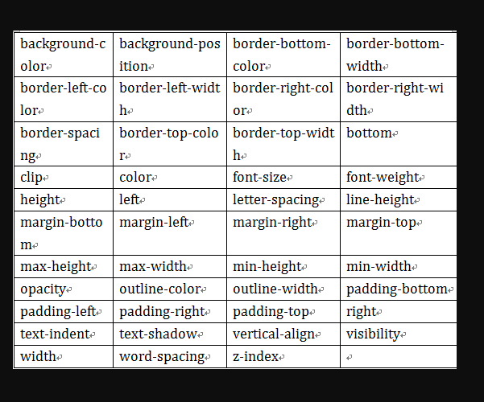

css3进阶
过度
过渡是CSS3中具有颠覆性的特征之一，可以实现元素不同状态间的平滑过渡（补间动画），经常用来制作动画效果。
帧动画：通过一帧一帧的画面按照固定顺序和速度播放。如电影胶片。
补间动画：自动完成从起始状态到终止状态的的过渡。
关于补间动画的特点：当前元素只要有“属性”发生变化时，可以平滑的进行过渡，并不仅仅局限于hover状态。
transition-property设置过渡属性
none 没有属性会获得过渡效果。
all 所有属性都将获得过渡效果。
property 定义应用过渡效果的 CSS 属性名称列表，列表以逗号分隔
transition-duration设置过渡时间
以秒做单位
transition-delay设置过渡延时
以秒做单位
transition-timing-function设置过渡速度
- linear 规定以相同速度开始至结束的过渡效果（等于 cubic-bezier(0,0,1,1)）。
- ease 规定慢速开始，然后变快，然后慢速结束的过渡效果（cubic-bezier(0.25,0.1,0.25,1)）。
- ease-in 规定以慢速开始的过渡效果（等于 cubic-bezier(0.42,0,1,1)）。
- ease-out 规定以慢速结束的过渡效果（等于 cubic-bezier(0,0,0.58,1)）。
- ease-in-out 规定以慢速开始和结束的过渡效果（等于 cubic-bezier(0.42,0,0.58,1)）。
- cubic-bezier(n,n,n,n) 在 cubic-bezier 函数中定义自己的值。可能的值是 0 至 1 之间的数值。
让我们来体验一下让一个正方形盒子变大的例子
再看一个综合运用的例子

2D转换
- 转换是CSS3中具有颠覆性的特征之一，可以实现元素的位移、旋转、变形、缩放，甚至支持矩阵方式，配合即将学习的过渡和动画知识，可以取代大量之前只能靠Flash才可以实现的效果。
1、移动 translate(x, y) 可以改变元素的位置，x、y可为负值；
a) 移动位置相当于自身原来位置
一个参数时：表示水平方向的移动距离；
两个参数时：第一个参数表示水平方向的移动距离，第二个参数表示垂直方向的移动距离
b) y轴正方向朝下
c) 除了可以像素值，也可以是百分比，相对于自身的宽度或高度
|
|
2、缩放 scale(x, y)可对元素进行水平和垂直方向的缩放，x、y的取值可为小数；
|
|
3、旋转 rotate(deg) 可以对元素进行旋转，正值为顺时针，负值为逆时针；
|
|
4、倾斜 skew(deg, deg)
一个参数时：表示水平方向的倾斜角度；
两个参数时：第一个参数表示水平方向的倾斜角度，第二个参数表示垂直方向的倾斜角度
|
|
5基准点 transform-origin
在使用transform方法进行文字或图像的变形时，是以元素的中心点为基准点进行的。使用transform-origin属性，可以改变变形的基准点。
用法：transform-origin: 10px 10px;
共两个参数，表示相对左上角原点的距离，单位px，第一个参数表示相对左上角原点水平方向的距离，第二个参数表示相对左上角原点垂直方向的距离；
两个参数除了可以设置为具体的像素值，其中第一个参数可以指定为left、center、right，第二个参数可以指定为top、center、bottom。
|
|
6、矩阵matrix() 把所有的2D转换组合到一起，需要6个参数。
我们可以同时使用多个转换，其格式为：transform: translate() rotate() scale() …等，其顺序会影转换的效果。
|
|